Eskom — A Detailed History (1930s–2025)
A narrative history tracing Eskom’s rise, the policy debates, capacity choices, institutional crises and the prolonged national energy shortfall that culminated in the severe outages of 2022–2023. This is intentionally long and information-dense so you can trim it to taste.
Executive summary — the story in brief
Eskom began as a state-driven utility that underpinned South Africa’s industrialisation. For decades it expanded generation to meet a growing mining and manufacturing economy. After the political transition in the early 1990s, a combination of stalled policy reforms, deferred maintenance, growing financial liabilities and controversial large projects left Eskom with an ageing fleet and insufficient new capacity. Over time the reserve margin narrowed and the system became vulnerable; by 2022–2023 South Africa experienced some of the worst and most prolonged load shedding in its history. Subsequent years have seen emergency measures, reform packages and the start of a difficult recovery process.
Origins and expansion (1920s–1980s)
Eskom's institutional roots trace to state initiatives to coordinate and finance large-scale electricity supply to mines, industry and cities. Formally established in the early 1920s, the utility's mission was to provide dependable bulk power as part of wider industrial development policies. During the mid-20th century, the discovery and industrialisation of South Africa’s mineral wealth — gold, platinum group metals, iron and coal — was closely coupled with expanding coal-fired generation and transmission networks. The construction of large coal plants and high-voltage transmission corridors allowed centralized, large-scale power supply that supported deep-level mining and energy-intensive smelting operations.
Through the apartheid period, Eskom's technical capabilities and centralized planning model emphasised economies of scale and secure supply to heavy industry. This model meant large baseload plants (often coal-fired) were prioritized, which worked well when demand supplied predictable industrial growth and state budgets allowed investment in heavy infrastructure.
Transition and policy re-think (1990s)
The political transition in the early 1990s re-oriented national priorities and opened debates about how to manage and modernize the electricity sector. Policymakers and analysts recognized that a modern, competitive economy required robust regulatory frameworks and an electricity sector that could attract private capital while meeting social and development goals.
The government’s White Paper on Energy Policy (1998) set out principles for sustainable energy policy: diversification of supply, increased efficiency, and a clearer role for market actors. Around the same time the Electricity Act and later legislative instruments sought to formalize regulatory oversight and clarify responsibilities between national and provincial actors. However, while the policy texts were published and debate intensified, practical implementation — especially market liberalization and private sector participation — moved slowly due to political sensitivities, institutional caution and the sheer scale of Eskom’s role in the economy.
These discussions included proposals for partial deregulation, the introduction of independent power producers (IPPs), and changes to procurement rules to enable private investment. For a time, the policy direction suggested a pivot away from single-utility dominance; in practice, entrenched procurement processes, contract disputes and capacity constraints slowed the adoption of private supply.
Legislation and regulatory milestones
- 1998 White Paper on Energy Policy — framed strategic goals for energy security, diversification and sustainable development. (See: gov.za)
- Electricity Act (1997) — legislative groundwork during the transition period; intended to modernise sector governance.
- Electricity Regulation Act (2006) — created a more formal regulatory environment and clarified the role of the National Energy Regulator (NERSA).
- Regulatory updates (2011, 2016, 2020) — a series of policy and regulatory adjustments that attempted to respond to evolving market realities, enable IPPs and provide for grid access and licensing changes.
Despite these milestones, a persistent challenge was aligning legislative intent with practical execution — particularly around licensing, procurement, and enabling private investment without undermining Eskom’s monopoly role where it still provided most capacity.
The 2000s — early signs of trouble and the build-versus-reform tradeoff
By the 2000s, it became clear that Eskom faced a dual problem: an ageing fleet requiring intensive maintenance, and a need for new capacity to meet rising demand. The government and Eskom pursued large new baseload projects, most notably the Medupi and Kusile coal-fired power stations. These projects were intended to add significant megawatts to the system, but both became synonymous with delays, cost overruns and engineering challenges.
At the same time, the case for diversification — renewables, gas, and embedded generation — grew stronger. A landmark programme, the Renewable Energy Independent Power Producer Procurement Programme (REIPPPP), began to bring private renewables online, but the pace and scale were not yet sufficient to offset generation shortfalls from the aging coal fleet.
Governance, procurement and the politics of large projects
Medupi and Kusile illustrate the governance risks of very large, state-managed capital projects. Contracts ballooned, timelines slipped, and technical problems complicated commissioning. The result was a double hit: the expected capacity did not arrive on schedule, and Eskom’s balance sheet and managerial bandwidth were strained by the projects’ costs.
Meanwhile, allegations of maladministration and corruption in the wider public sector — often referred to as state capture in the mid-2010s — damaged institutional credibility and diverted attention from technical recovery programmes. These governance failures compounded operational stress and reduced public trust in state-led solutions.
Reserve margin dynamics and the rise of load shedding
Reserve margin — the buffer between available generation and peak demand — is a basic metric of system security. Over years of underinvestment and maintenance backlogs, South Africa’s reserve margin fell from comfortable levels into a precarious range. The practical consequence was that equipment failures, forced outages and plant maintenance could no longer be absorbed without cutting supply to consumers: load shedding emerged as the operational response to protect the grid from catastrophic collapse.
Load shedding occurred sporadically for many years, but its frequency and depth increased through the 2010s and culminated in particularly severe episodes in 2022–2023 when multiple units were offline concurrently and the system experienced cascading failures.
2022–2023: the peak of the crisis
The years 2022 and 2023 saw a dramatic escalation in load shedding, measured both by the number of hours and the depth (stages) of outages. Industries reported production losses, jobs were affected, and the economic toll became a central policy concern. Several factors converged: chronic plant outages, delayed maintenance, insufficient reserve capacity, extreme weather impacts on coal supplies and water for hydropower, and operational challenges at the large new plants.
The socio-economic impact was substantial: manufacturing output fell in several energy-intensive sectors, and investor confidence was shaken. The crisis also sharpened public debate about the pace of renewables rollout, the need for energy storage and the role of private generation and demand-side management.
Emergency responses and reforms
Faced with an urgent national crisis, government and industry launched emergency and structural responses. The National Energy Crisis Committee (NECC) coordinated a multi-stakeholder approach to stabilise supply; the Energy Action Plan proposed a suite of measures to accelerate generation, ease procurement, and prioritize grid stability; and Eskom rolled out targeted operational programmes focused on generation continuity and recovery.
Emergency measures included accelerated procurement of open-cycle gas turbines (OCGTs), short-term contracts with IPPs, prioritised maintenance schedules, and reforms to licensing and grid access rules to enable faster connection of private capacity. These moves were aimed at both immediate relief and medium-term structural change.
Financial stress and the debt problem
Eskom’s large capital programmes and operational shortfalls created severe financial strain. Rising debt servicing costs, tariff pressures and reduced revenue from constrained generation created a vicious cycle: lack of funds hindered maintenance and new projects, which in turn worsened operational reliability. Addressing Eskom’s balance sheet — including potential government guarantees, restructuring and clearer separation of commercial activities — became a central piece of the policy discussion.
How the crisis affected manufacturing and mining
Energy-intensive sectors — smelters, steel plants, refineries and large mining operations — are particularly vulnerable to prolonged outages. Many producers reported curtailed production, increased costs from diesel back-up generation, and lengthy supply chain disruptions. In some cases, companies accelerated moves to captive power or contracts with private generators to reduce exposure to grid instability.
This dynamic underlines the strategic link between reliable power and industrial policy: without predictable energy, value-add activities cannot prosper and export competitiveness suffers.
Institutional reforms and unbundling debates
One of the long-running debates has been whether Eskom should remain a vertically-integrated utility or be functionally separated into generation, transmission and distribution entities. Proponents of unbundling argue it would improve transparency, allow independent procurement for generation, and open space for private actors. Opponents contend that separation risks coordination failures and might expose the system to short-term market pressures.
In practice, South Africa adopted partial unbundling and governance reforms intended to clarify roles while attempting to maintain system integrity. The debate continues, and the pace of structural change has been shaped by political choices, fiscal constraints and technical concerns.
Recovery, new capacity and the future (2024–2025 and beyond)
Entering 2024–2025, the policy focus shifted to a mix of recovery and transformation: restoring existing plant reliability; accelerating new generation, particularly faster-build renewables and flexible gas capacity; expanding storage and demand-side management; and reforming procurement to enable faster IPP participation. Implementation has been uneven but shows progress in multiple areas — more renewable capacity contracted, short-term gas and OCGT capacity added, and reforms to procurement accelerated.
However, the path to full recovery is complex. It requires sustained investments in maintenance, clear regulatory frameworks that attract private capital, improved governance inside Eskom, and policies that manage the social and labour impacts of a changing electricity system.
Eskom coal-fired power stations — fleet snapshot
A compact visual index of Eskom’s coal fleet (images saved under images/power/).
Design efficiency and unit/installed capacity are shown where the Eskom “coal fired power stations” page provides them.
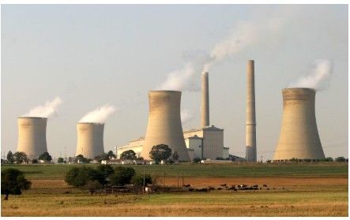
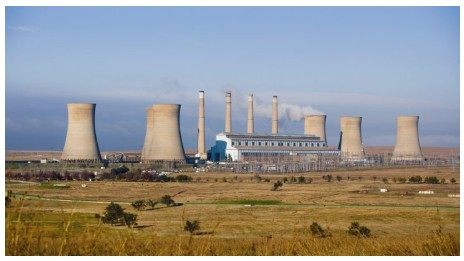
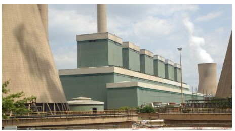
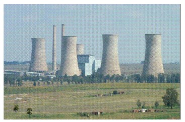
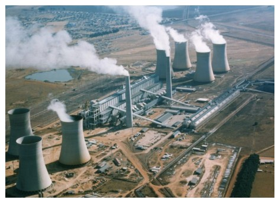
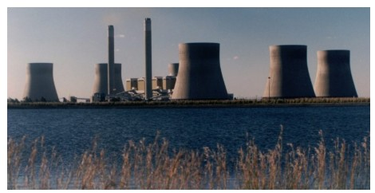
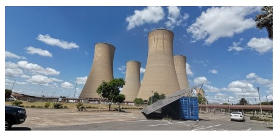
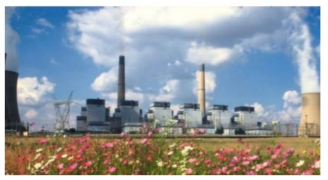
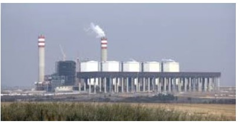

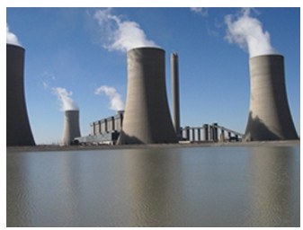
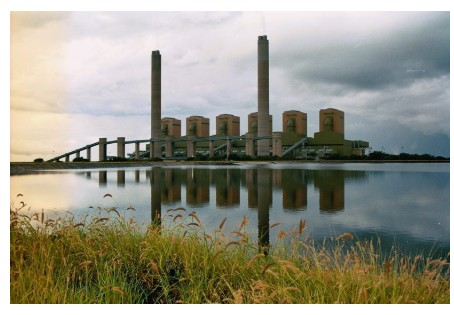
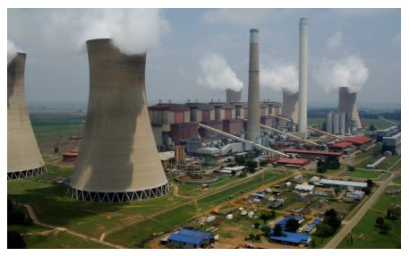
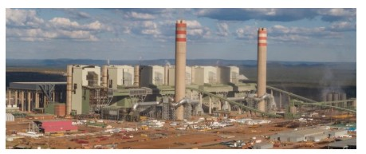
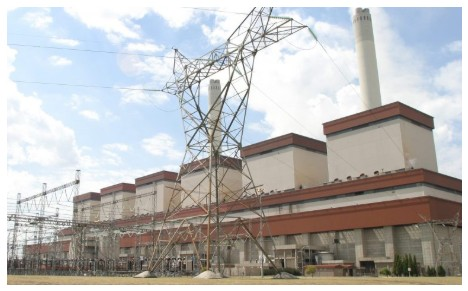
Lessons and conclusions
- Plan and deliver capacity continuously: large economies need rolling investment programmes, not intermittent mega-projects alone.
- Align policy with procurement and execution: laws and white papers must be matched with capable institutions and streamlined procurement to be effective.
- Balance central planning with private participation: the IPP model and distributed generation provide resilience if access and contracting are sensible.
- Prioritise maintenance: deferred maintenance becomes a multiplier of risk and cost over time.
- Tackle governance decisively: corruption, weak procurement controls and unstable executive leadership amplify technical problems.
Sources, suggested reading and citations
Below are starting points for primary sources and reporting you can use to expand citations in-line:
- South African Government publications — White Papers, Acts and official Gazettes.
- Eskom annual reports and statements.
- National Energy Regulator of South Africa (NERSA) — licensing and regulatory rulings.
- Press reporting: Business Day, Mail & Guardian, News24, Reuters, and Bloomberg for investigative and timeline reporting on Medupi/Kusile, load shedding and state capture.
- Academic and policy analysis: papers on South African energy policy, World Bank and IMF reviews on Eskom financing and fiscal implications.
If you want, I will add inline, footnote-style citations to specific paragraphs (e.g., link the 1998 White Paper paragraph directly to the government document, add Medupi commissioning reports, and cite NERSA regulatory changes chronologically). Tell me the citation style you prefer (inline links, bracketed numbers, or footnotes) and I’ll add them throughout the file.